面向老年人、残障人士及行动不便群体：高校青年志愿者伴游，高校与文旅单位协同；影石镜头记录旅途，用 AI 把一次同行整理成可回看的故事与可带走的文创纪念。
InsTrip 一起游从南京开始，把“有人陪着出门”做成一套可以预约、可以商量、可以回看的产品：手机上安排行程、找到同行的志愿者；旅途中用影石相机记录；回来后用 AI 把照片整理成故事，再做成冰箱贴或钥匙扣。
南京内置地点
慢行参考路线，含休息与台阶提示
三维文创：6 冰箱贴 / 6 钥匙扣
主题档案，分 5 个主题
v2.7 前端与服务端自动检查通过
真实安装包界面截图，未做美化
展示站 116.5 MB，附 sha256 清单
高校青年团队 Rank8848
| 01 | 为什么做：老龄化背景与政策依据 | 03 |
| 02 | 听见需求：从业者访谈 | 04 |
| 03 | 服务谁、做什么、设计原则 | 05 |
| 04 | 一次同行的三段场景 | 06 |
| 05 | App 实况：九个真实界面 | 07 |
| 06 | 影石设备与 AI 介入点 | 08 |
| 07 | 旅行文创：从一张照片到三维纪念 | 09 |
| 08 | Web 展示站与三维记忆馆 | 10 |
| 09 | 技术架构 | 11 |
| 10 | 开发迭代与验证记录 | 12 |
| 11 | 六个创新点 | 13 |
| 12 | 能力边界：已实现与计划 | 14 |
| 13 | 团队、合作与落地路线 | 15 |
| 14 | 交付清单与资料来源 | 16 |
Android 应用：行程、地图、志愿向导、社区、消息、数字藏品与旅行短片，是真正带出门的一端。Web 展示站：产品介绍、三维记忆馆和 44 份档案，双击即可离线打开。内容与文创：12 件 GLB 模型、南京实景与完整来源记录。
老年人、残障人士与行动不便的朋友出门，要同时面对三个问题：这段路能不能走完，走累了在哪里坐，出现变化时能不能退回来。多数出行工具回答了“怎么走”，很少回答“我能不能这样走”。
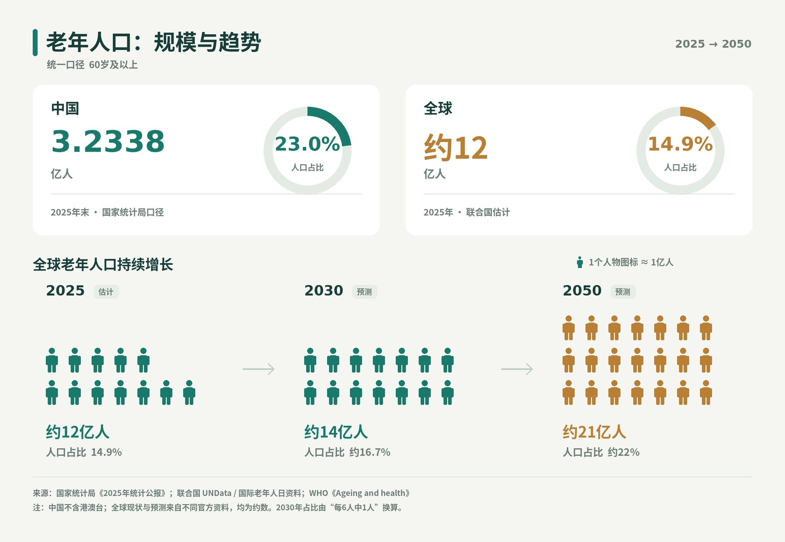
图：老年人口规模与趋势（统一口径 60 岁及以上）。来源：国家统计局《2025 年统计公报》；联合国 UNData / 国际老年人日资料；WHO《Ageing and health》。均为约数。
台阶、坡度、休息点、预约条件散落在公众号、点评与现场公告里，出发前很难拼成一份能用的计划。
志愿陪伴多发生在校园社团与线下活动中，缺少可预约、可沟通、可回看的入口。
一次难得的出行只留下几十张照片，没有地方把影像、讲述与再创作连起来，也没有人问过“这张能不能给别人看”。
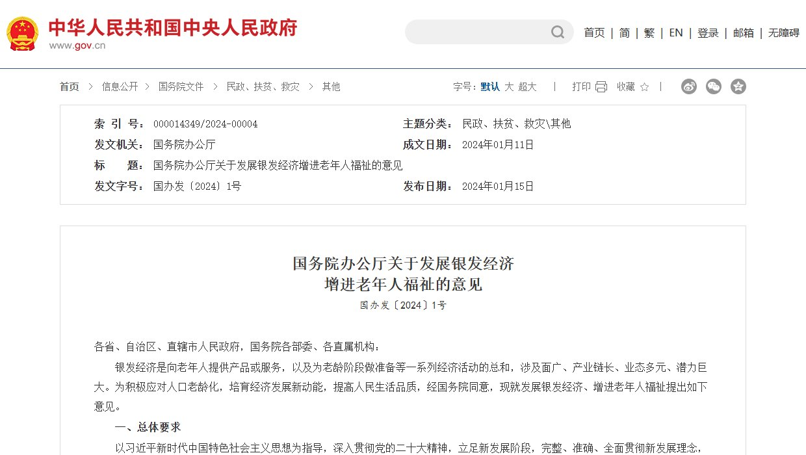
国务院办公厅《关于发展银发经济增进老年人福祉的意见》国办发〔2024〕1号。原文：gov.cn/zhengce/content/202401/content_6926087.htm
数字适老化与老年旅游都已进入政策视野，但“有人陪着出门”仍主要依靠线下志愿组织。
团队访谈了助残领域的四位从业者，问题集中在真实需求、服务切口和能否长期持续。
“你们的 InsTrip 项目，解决的是刚需、填补的是空白、传递的是温度。科技向善最好的样子，就是你们这样。非常期待你们项目持续打磨、早日落地，真正成为全国无障碍文旅的创新样板项目。”
王荔 · 中国助残志愿者协会副秘书长 · 关注点：安全、专业与尊严
“这个问题非常真切，要先关注了才有解决办法，故此非常认可你们做的这个方向，是一个很有需求的方向。”
李友才 · 残疾人工作者
“志愿者很多，但是志愿服务的摄影师不多，这是个现实痛点。”长期服务难以依赖免费摄影，志愿者应专注陪伴与协助。
罗文静 · 肢体残疾人协会秘书长
“一定要找出服务具体的残障人群，我们解决就聚焦腿脚不便的残障人士。”
汤敏 · 视障跑者挑战项目发起人
先服务腿脚不便的老年人与肢体残障人士，从南京短距离、可退出的慢行线路做起。
用影石设备和 AI 减轻拍摄与后期整理负担，让志愿者把精力留在陪伴与协助上。
拍不拍、给谁看、能否公开，都由当事人决定；授权写进流程。
说明：本轮为从业者访谈，后续仍需直接访谈老年人、残障人士及家属。来源：《Rank8848 用户访谈报告》第 2–4、6–8 页（纪要摘要）。
重点是腿脚不便、行动受限的出行者
志愿者同行 + 影像留存
素材整理、故事生成与公益社区
需要按自己节奏展开的行程、看得清点得到的界面、可以随时停下来的路线，以及不必解释也能被理解的协助。
先了解对方真正想要什么，约定协助范围与退出方式，再把这段经历留成可以复盘的记录。
需要可复用的路线内容与工具，把一次活动变成能持续运行的机制，而不是每年重做一遍。
需要服务过程可解释、可复盘、可继续投入：能看见流程与边界，而不是只看一张合影。
走哪条路、要不要停、照片给不给家人看，都直接问本人。
不存在“典型的老年人”，看能力、兴趣与环境，不看岁数。
见面地点、往返、休息节奏讲清楚，保留缩短与取消的余地。
户外看得清、点得到、知道下一步，比功能多更重要。
· 不做逐步导航，不声称已完成无障碍路线认证，点位信息需结合现场确认。
· 不做自动危险识别、救援调度与医疗监测，专业照护与应急另行安排。
· 数字藏品是照片、文字与创作作品，不涉及代币或交易。
· 不把提案写成既有规模：没有虚构的评分、服务量或受访故事。
行前看得清，行中走得稳，行后留得住。
查天气与开放情况，看台阶与休息点，挑出两三个想去的地点。
行程按天展开，分享只读或编辑邀请；见面地点、返程方式写在备注里。
走不动就删掉下一站，改完的长图直接发给同行的人与家人。
翻照片写几句话，挑一张做成纪念；是否公开由当事人决定。
截图取自真实安装的 Android 应用，等比展示，未做界面美化与内容替换。顺序沿一次真实出行展开：今天去哪里，这段路怎么走，和谁一起，留下了什么。
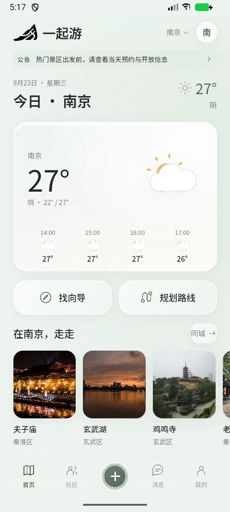
天气、每日行程与南京目的地
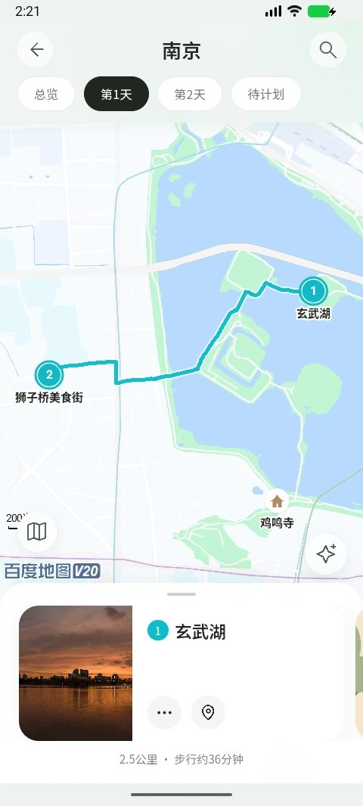
百度地图步行道路、分天与停留
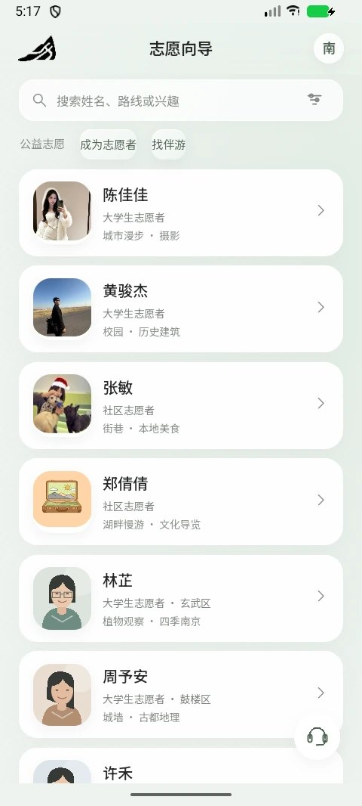
按兴趣与路线查找同行者
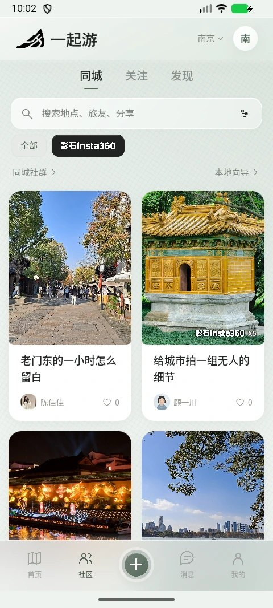
同城 / 关注 / 发现，影石主题
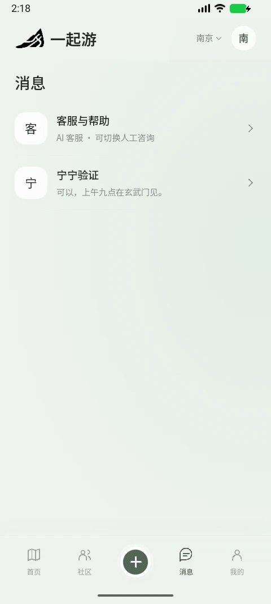
沟通同行细节，AI 客服可转人工
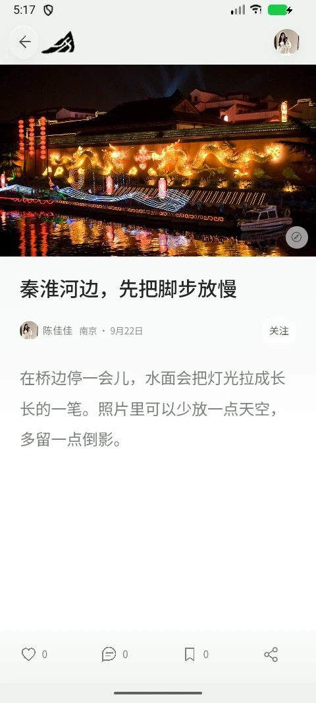
跟着一篇记录重新看见南京
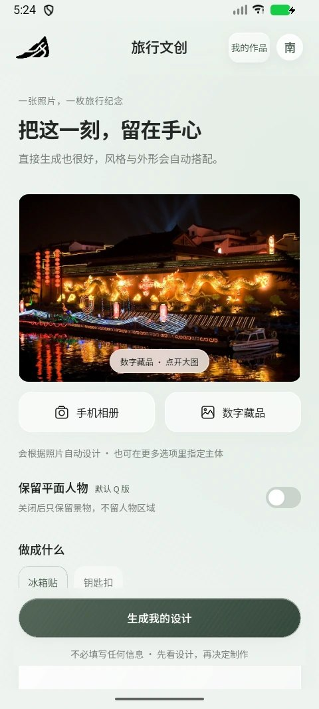
一张照片生成冰箱贴或钥匙扣
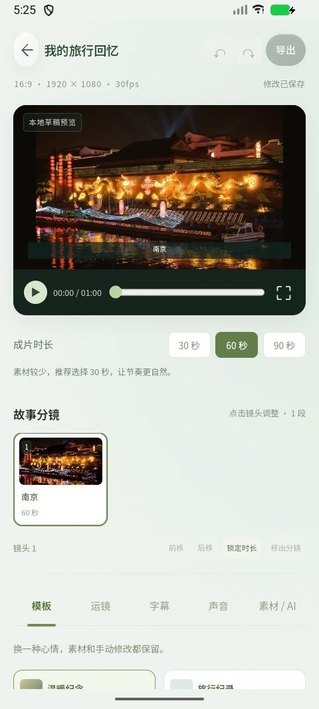
分镜、时长与模板
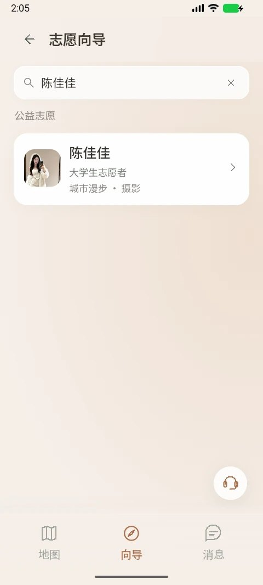
三个入口，更大字号与操作区
南京向导
应用内 AI 对话助手：“想看湖，想逛老街，还是想去博物馆？告诉我你的想法和体力，我来帮你安排。”
在线回答取决于已配置的模型服务。
志愿者把精力留在身边，设备和 AI 负责记录与整理。五个环节串起一次完整的公益同行。
发布需求
路线偏好
高校青年
本地向导
运动相机
全景 · 云台
筛选 · 分类
内容理解
冰箱贴 · 明信片
钥匙扣
伴游安全记录、关键场景抓拍，为服务质量复盘留下第一视角素材。
景区全景记录，公益活动与文旅宣传素材，先拍全景再选视角。
人物采拍、人文记录，稳定的移动拍摄让采访慢下来。
当前通过手机系统相册衔接影石素材；相机直连与自动导入仍是后续探索方向。
从旅行素材中筛选清晰、有代表性的片段。
结合照片与讲述，生成易读的旅途回忆。
用简洁的操作帮助亲友共同回看。
把照片转成插画风格的设计示意，再进入参数化建模。
回答常见问题、辅助讨论行程，可切换人工。
提供模板、运镜与节奏建议，人保留最后的取舍。
适老版默认关闭智能生成入口，把选择权留给使用者；所有 AI 输出都标注为“示意”，不被当作事实或承诺。
三维文创不是把平面图案贴到方块上，而是一条可复现的四步管线：每一步都有输入、参数与校验，最终交付一个能在浏览器里自由旋转、可以下载的模型。
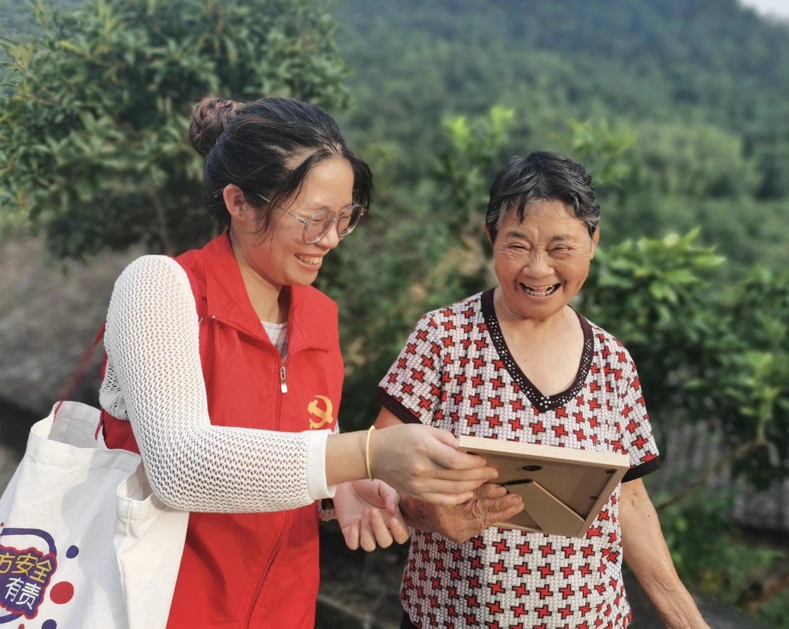
① 真实照片（用户授权）
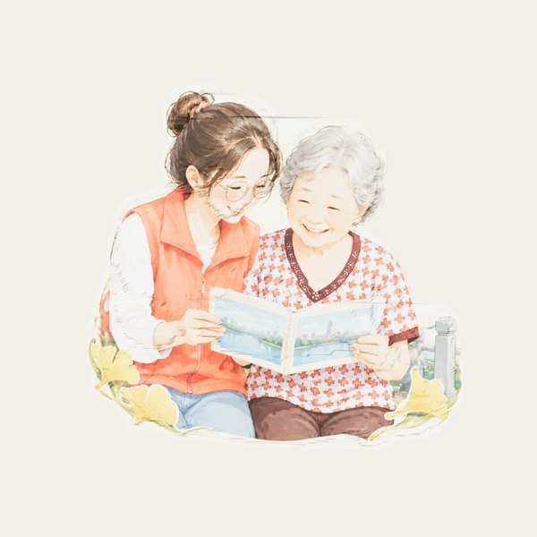
② 插画示意 → ③ 浮雕建模
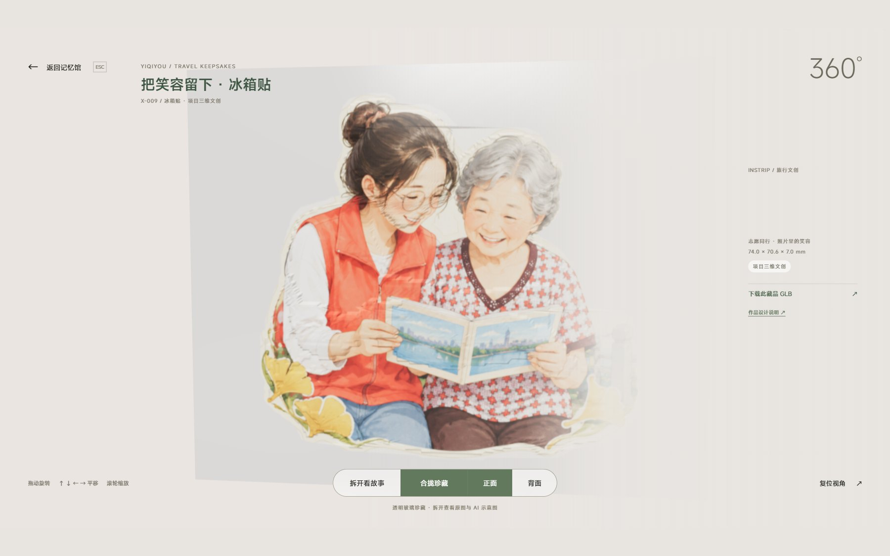
④ 网页 360° 查看与 GLB 下载
相册选图或从数字藏品进入；可保留平面人物，或只保留景物。
生成温暖的水彩插画作为正面图，是设计示意，不替换原图。
提取主体轮廓，生成闭合平背、柔和倒角的浮雕板体，正面 UV 贴图。
顶点、三角面、体积逐件检查，记录孔位与五金，导出 GLB 与清单。
把笑容留下 · 冰箱贴
把世界连接 · 钥匙扣
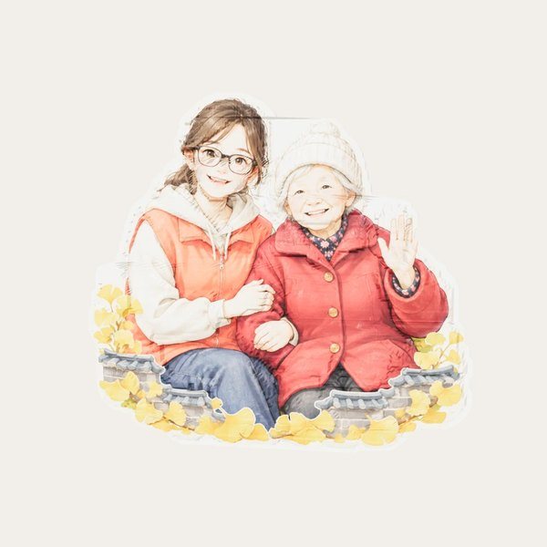
陪伴的温度 · 冰箱贴
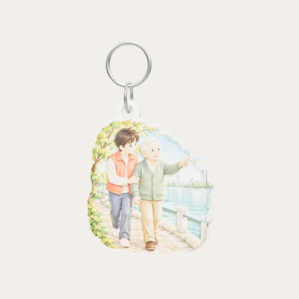
湖畔有你 · 钥匙扣
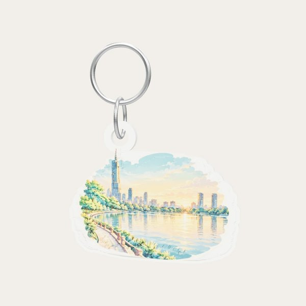
玄武湖慢行 · 钥匙扣
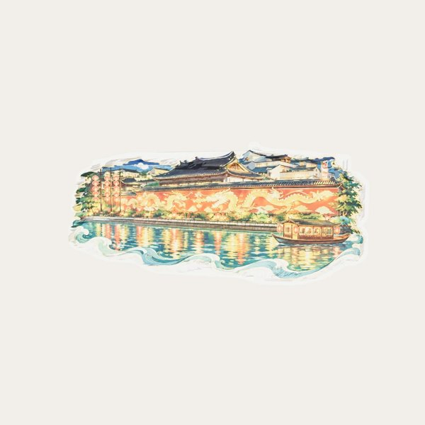
秦淮灯影 · 冰箱贴
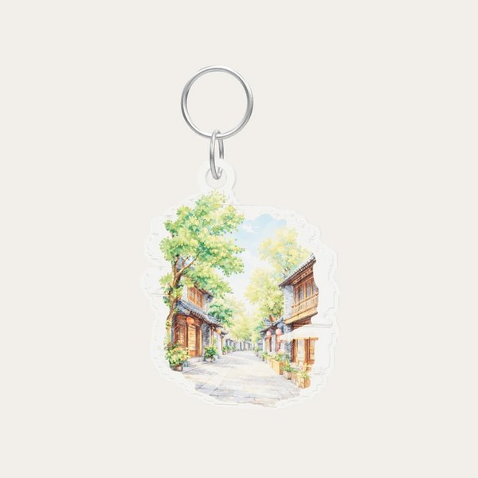
老门东巷遇 · 钥匙扣
钟山绿意 · 冰箱贴
博物院一日 · 钥匙扣
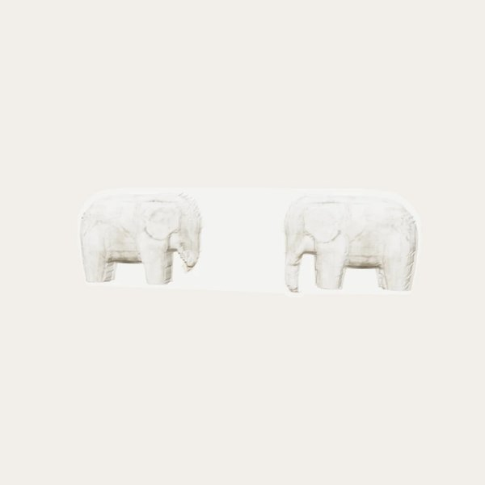
明孝陵石象 · 冰箱贴
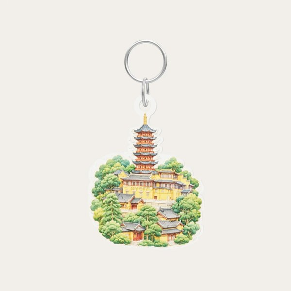
鸡鸣寺望城 · 钥匙扣
南大林荫 · 冰箱贴
外形 74.0 × 70.6 × 7.0 mm · 板厚 3.2 mm（最小 2.86）· 装配包络 4.21 mm · 底板三角面 29,900 · 单位 mm（GLB 为 m）· 正面 +Z
几何完整（闭合平背、无自交与破面）· 模型互异校验 · 尺寸可打样。人物保持平面插画，不做三维扫描；成品仍需结合材质打样。
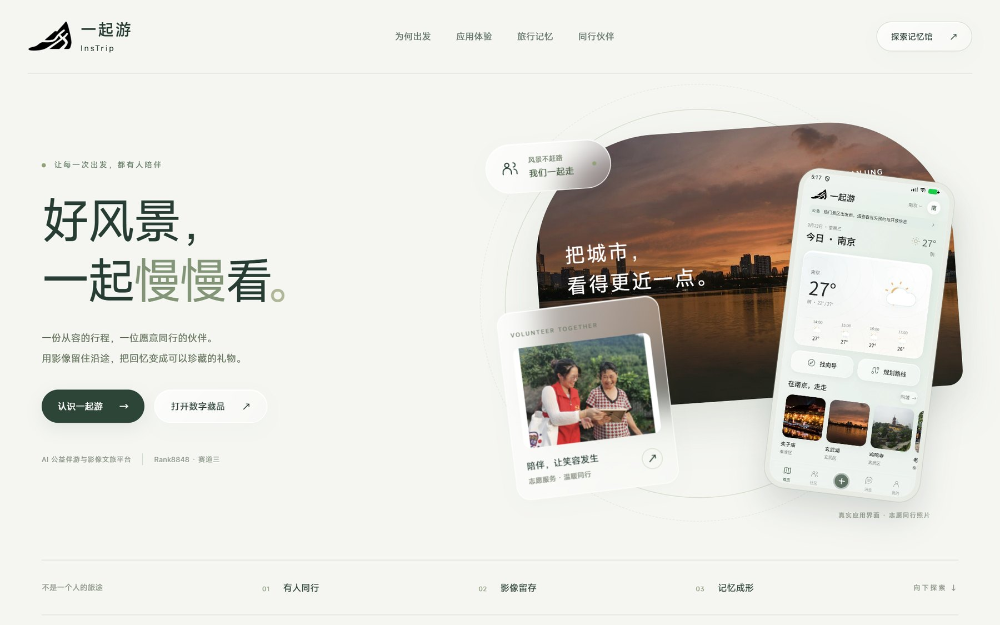
首页“好风景，一起慢慢看”：为何出发、应用体验、旅行记忆、同行伙伴四个章节。
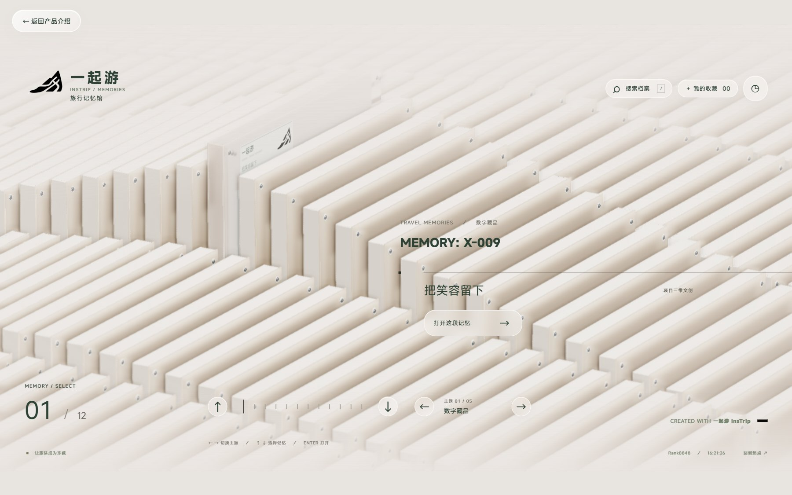
三维记忆馆：44 份档案按 5 个主题排成书列，镜头随选择推进。
文创查看器：拆开看原图与示意，合拢珍藏，可 360° 旋转并下载 GLB。
纯静态站点：无数据库、无 API、无需 npm install。Windows 双击“打开网站.cmd”即可查看。
把 website 文件夹上传到静态站点根目录即可，Nginx、宝塔、静态托管均可。
216 个文件附 sha256 清单；素材来源、字体许可与照片授权随包留档。
交互：拖动旋转、方向键平移、滚轮缩放，Enter 打开、Esc 返回，屏幕按钮与键盘等价。支持“减少动态效果”。GLB 按需加载（单件 0.9–4.2 MB），模型载入失败可重试，单件失败不阻塞其余档案浏览。
客户端负责随身的行程与记录，展示站负责把作品与理念讲清楚，内容管线把照片变成可以转起来的三维纪念。三者共享同一套内容与口径。
| 客户端 | Android 原生（Kotlin）外壳 + WebView 页面层；百度地图 SDK、CameraX |
| 云服务 | 社区、同行伙伴、会话消息、短片任务、行程与客服接口 |
| 展示端 | 原生 JavaScript（无前端框架）+ three.js；CSS 玻璃拟态 |
| 三维 | glTF Binary（GLB）、参数化浮雕建模，mm 记录尺寸 |
照片（相册 / 相机）→ 插画示意（AI 风格化）→ 云端网格（Lux3D）→ 浮雕加工（闭合背面、挂孔或磁贴）→ 几何校验 → GLB → WebGL 展陈（360° 观察、拆开看故事、下载）
取舍：展示端刻意不用前端框架，换来更小的体积、更少的依赖。
地图、相机、路线、同行与记录，逐版汇聚。每次改动都留下检查记录。
基础旅行
适老与协作
实际道路
群聊与界面
统计范围随版本变化，数字不相加。
| 2.4 | 客户端 73 + 服务端 43 | 116 |
| 2.5 | 客户端 83 + 服务端 58 | 141 |
| 2.6 | 本轮自动检查 | 268 |
| 2.7 | 本轮自动检查 | 312 |
前端与服务端自动检查通过，fail 0。
VERIFICATION 2.4
116 assertions
VERIFICATION 2.5
141 assertions
RELEASE 2.7
APK 源资源核对
FINAL TEST LOG
fail 0
SOCIAL RETEST
pass
NATIVE CHROME
pass
NATIVE MAP
pass
VIDEO V4 · 专项
30 秒云端样片 1920×1080 · 30fps
另记录一条历史问题：Android 崩溃 SIGSEGV（map-loaddata3）。该记录仅表明已发现与排查，不代表厂商崩溃已根除。
创新不在于多用一个技术名词，而在于在几个具体的地方，做了别人通常会绕开的选择。
向导资料、同行计划、消息、只读 / 编辑邀请与双向私聊是主流程。行前确认与回访写成服务流程档案：见面地点、往返安排、休息节奏、联系方式，以及“如果今天状态不好，可以缩短或取消”。
适老是独立开关：三个入口、放大的字号与操作区、默认关闭智能生成入口。在户外，熟悉的操作顺序比功能数量重要。
从下拉拍照、三维翻面写回忆，到插画示意、参数化建模、GLB 下载与网页 360° 观察，一条链路走完。数字藏品是照片与创作，不涉及代币或交易。
愿意同行不等于愿意出镜，愿意保存不等于愿意公开。授权拆成私人留存、社区分享、宣传使用三件事，重要片段由当事人看过再用，随时可以说停。
44 份档案逐条标注状态与依据，区分“已实现”“提案”“待验证”；不冒充真实志愿者、不编造受访故事、不展示虚构的评分与服务量。
Android 应用 + 116.5 MB 纯静态展示站，三维内容随包交付。双击就能看，拷进服务器根目录就能上线，没有数据库、API 和构建步骤。
它们都不是“多做一个功能”，而是在某处多花了力气：多做一次确认、多写一条边界、多校验一遍几何、多打一次包。这些东西不出现在宣传语里，但决定了一件作品是否值得被托付。
打开展示站的三维记忆馆，翻两页档案；打开应用的适老版，走到“规划路线”；再回来看这一页的六条创新点。它们都能被当场验证，而不是只能被相信。
用一张表代替形容词。“已实现”指当前应用或展示站中可当场打开的部分；“提案”指已写进设计但尚未落地；“待开展”指方向成立但结果未知。
| 能力 | 当前状态 | 说明与后续 |
|---|---|---|
| 首页天气与每日行程 | 已实现 | 天气附数据时间；线上查询不可用时明确提示 |
| 南京地点与慢行路线 | 已实现 | 24 个地点、4 条参考路线，含台阶与休息提示 |
| 地图步行路线与分天安排 | 已实现 | 百度地图联网计算；失败时退回地点顺序示意 |
| 行程分享与协作编辑 | 已实现 | 只读 / 编辑邀请，多人编辑保留版本冲突提示 |
| 志愿向导搜索与私聊 | 已实现 | 使用匿名设备身份，未完成实名认证与资质审核 |
| 同城社区与群聊 | 已实现 | 同城 / 关注 / 发现；体验账号与器材标签为演示设定 |
| 适老模式 | 已实现 | 独立开关，收敛为地图、向导、消息三个入口 |
| 数字藏品与照片回忆 | 已实现 | 默认私密，主动发布才进入社区 |
| 旅行文创（三维） | 已实现（示意） | 模型可旋转、可下载；实体成品需按材质打样 |
| 旅行短片 | 已实现 | 30 / 60 / 90 秒成片，模板、运镜、字幕与素材可调 |
| AI 客服与小宁对话 | 已实现（受限） | 取决于已配置的模型服务；人工客服尚未接入 |
| 影石相机直连与自动导入 | 提案 | 当前通过手机系统相册衔接 |
| 服务试点、访谈与回访 | 待开展 | 访谈 → 短距离试点 → 影像回访 |
| 无障碍路线认证 / 逐步导航 | 不做承诺 | 需实地核验与专业评估 |
做不好会害人。路况、台阶与临时施工变化太快，与其给一个看起来精确的箭头，不如把地点顺序、距离与休息点讲清楚。
不是。从照片出发做插画与浮雕建模：人物保持平面，板体有真实厚度与倒角，是用来沟通形状与尺寸的设计示意。
先做透一座城市再谈复制。24 个地点与 4 条路线，是验证“慢行 + 休息 + 陪伴”逻辑的最小样本。
华为开发者大会全国 16 强；南京高新技术人才 Zstar 席位；南京智澎科技有限公司技术；江苏省团委表扬信；组织多次国家级、省重点志愿活动。
AI 创业者 / 独立开发者；南京市诚果科技公司股东；S创+东虹桥国际青年科创；OPC 社区负责人。
TokenNest 创始人。
AIGC creator / 创业者 / FDE；深圳市粤锦辰传媒公司股东；Rebuild-Z 硬科技社区品牌负责人；opendev“赞助计划”负责人；立云音文化工作室负责人。
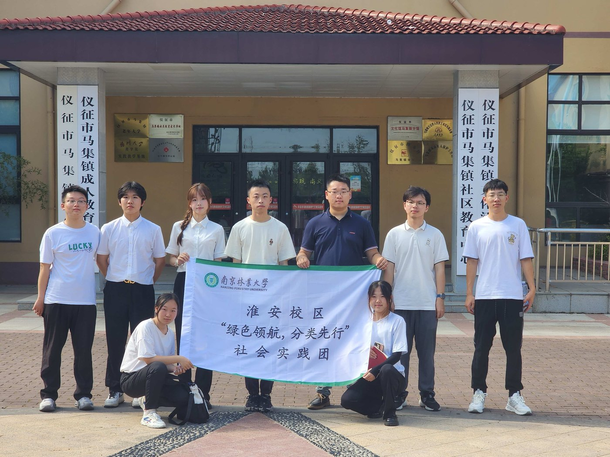
团队社会实践照片（来源：参赛 PPT 团队页）。
技术支持：影石 Insta360（运动与全景影像方案）、百度地图开放平台（地图与步行路线）、阿里云（服务与资源支撑）、Qoder（研发工具）。
合作单位：南京林业大学心理健康协会、Rebuild-Z 等。
指导单位：中国助残志愿者协会、中国肢残人协会、长江商学院公益部、北京市房山区残疾人服务中心。
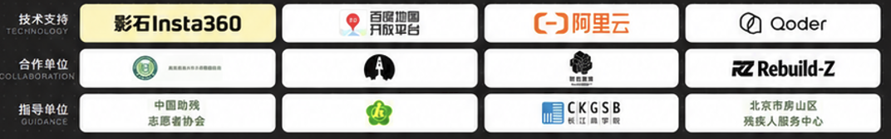
合作方标志仅用于说明合作关系，不构成背书或认证。
面向老年与残障群体、志愿者与文旅场景开展访谈，记录个人偏好与明确的协助需求。
从短距离、可退出的线路开始，双方确认协助范围，专业照护与应急另行安排。
回访路线负担、交流体验与拍摄感受，由本人挑选愿意留下的故事与影像。
拟采用的观察指标（尚无数据）：试点场次与成行率 · 哪段路最累、哪里适合休息 · 影像授权留存与撤回处理 · 当事人与志愿者是否愿意再来一次。
| 形态 | 内容 | 体量 |
|---|---|---|
| Android 应用 | 一起游 v2.7.0（Android 6.0 及以上） | 安装包约 95 MB |
| Web 展示站 | 产品章节 + 三维记忆馆 + 44 份档案 | 216 个文件 / 116.5 MB |
| 三维文创 | 12 件 GLB（6 冰箱贴 / 6 钥匙扣）+ 模型清单 | 单件 0.9–4.2 MB |
| 演示视频 | 产品演示 60 秒 · 开发与验证记录 60 秒 | 1280×720 |
完整解压后双击“打开网站.cmd”，浏览器自动打开；查看时保持窗口开启。无需 Node.js 或 Python。
把 website 内全部文件上传到静态站点根目录，index.html 位于根目录，资源路径以 / 开头。
Python 3：python3 -m http.server 8080；Node.js：node preview.cjs。三维记忆馆建议新版 Chrome / Edge 横屏浏览。